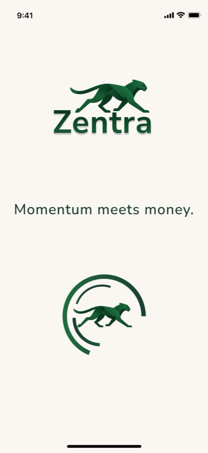

Progress as the product
Zentra organizes saving around goals, not one abstract balance.
A vacation, an emergency fund, a wedding, a car. Each becomes something visible and measurable instead of disappearing into one total.
Progress rings, percentages, and dollar amounts turn "I should save more" into something concrete: where I am now and how far I have left.

Identity built around momentum
Zentra needed to feel like progress, not paperwork.
The cheetah mark is shown in motion to reinforce speed and focus. Deep green and gold push the identity toward growth and achievement, while rounded typography keeps the interface approachable instead of clinical.
Nunito Sans and Open Sans keep the typography rounded and approachable, so the app doesn't intimidate someone who's never budgeted a day in their life.
The goal was a financial product that could feel credible without becoming intimidating.

Testing changed the interface
Three usability sessions surfaced real friction. Each one led to a specific change.
- Wanted more explanation for how numbers were calculated
- added tooltips explaining the math
- Found the "Building Plan" screen slightly confusing
- added a visual loading indicator
- Took a moment to notice the "+" icon as the entry point for creating a goal
- added iconography and a supporting label


Accessibility and contrast were part of the design review, not treated as separate from it.
production note · select imagery created with generative AI